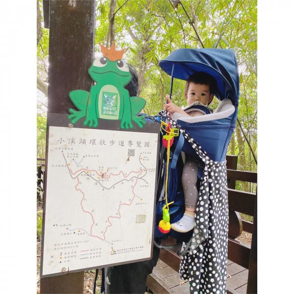
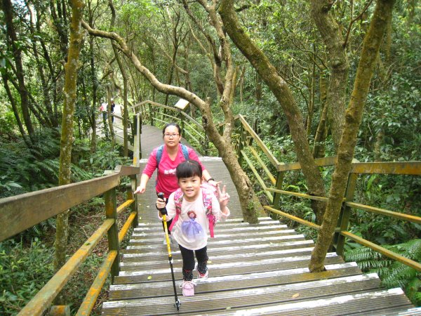
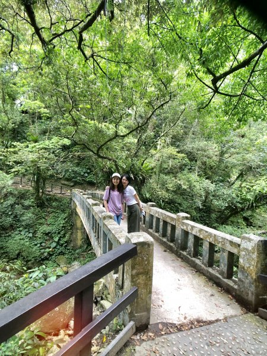
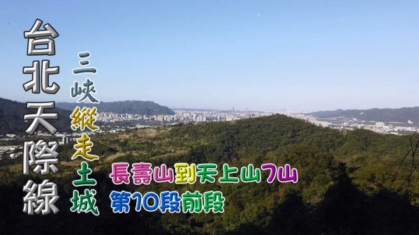

北捷四處晃｜雪雪山行筆記
關於雪雪
聯絡雪雪
2021年臺北大縱走尋寶任務
活動簡介
任務說明
操作教學
攻略秘笈
常見問題
交流筆記
一日行程
親子行程
Blog Post
Other Pages
Full Width Page
Sidebar Page
FAQ
404
Pricing Table
親子行程
交流筆記
首頁
親子行程

台北小溪頭環狀步道《親子登山》
出發日期 2020/05/02
回程日期 2020/05/02
相關路線
碧溪步道
、小溪頭環狀步道、大崙頭森林步道、大崙頭自然步道
相關山岳 小溪頭環狀步道
查看更多 →

1090307【北市士林】台北小溪頭環狀步道 《親子登山》
出發日期 2020/03/07
回程日期 2020/03/07
相關路線
內雙溪自然中心步道(台北小溪頭)
、
碧溪步道
、
大崙頭尾山親山步道
相關山岳
大崙頭山
查看更多 →

滿月圓—台北近郊避暑勝地
出發日期 2019/05/05
回程日期 2019/05/05
相關路線
滿月圓森林步道
查看更多 →

天上山縱走，三峽長壽山到土城天上山縱走，台北天際線10前段連走7山
出發日期 2021/01/03
回程日期 2021/01/03
相關路線
成福山、十八羅漢岩登山步道
、
天上山步道
相關山岳
長壽山
、
成福山
、
十八羅漢岩
、
石門內尖山
、
石門內尖山東峰
、
三粒半
、
天上山
查看更多 →